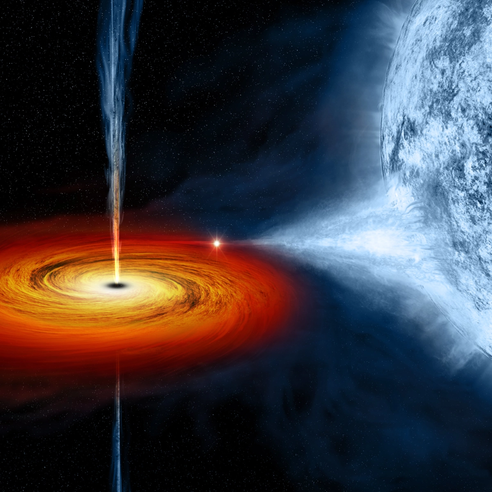

= 90rem) 25.75rem, (width >= 61.25rem) 12.875rem, calc(100vw - 4rem)" >Stellar
When a star with more than eight times the Sun’s mass runs out of fuel, its core collapses, rebounds, and explodes as a supernova. What’s left behind depends on the star’s mass before the explosion. If it was near the threshold, it creates a city-sized, superdense neutron star. If it had around 20 times the Sun’s mass or more, the star’s core collapses into a stellar-mass black hole.
The masses of these newly born objects can range from a few to hundreds of times the Sun’s mass, depending on star’s mass when the supernova began. Stellar-mass black holes can continue to gain mass through collisions with stars and other black holes.
Nearly all the stellar-mass black holes observed so far have been found because they’re paired with stars. They likely originated as mismatched stars where the more massive one evolved rapidly into a black hole. In some cases, called X-ray binaries, the black hole pulls gas off the star into a disk that heats up enough to produce X-rays. Binaries have revealed around 50 suspected or confirmed stellar-mass black holes in the Milky Way, but scientists think there may be as many as 100 million in our galaxy alone.
The black hole named Cygnus X-1 formed when a large star caved in.